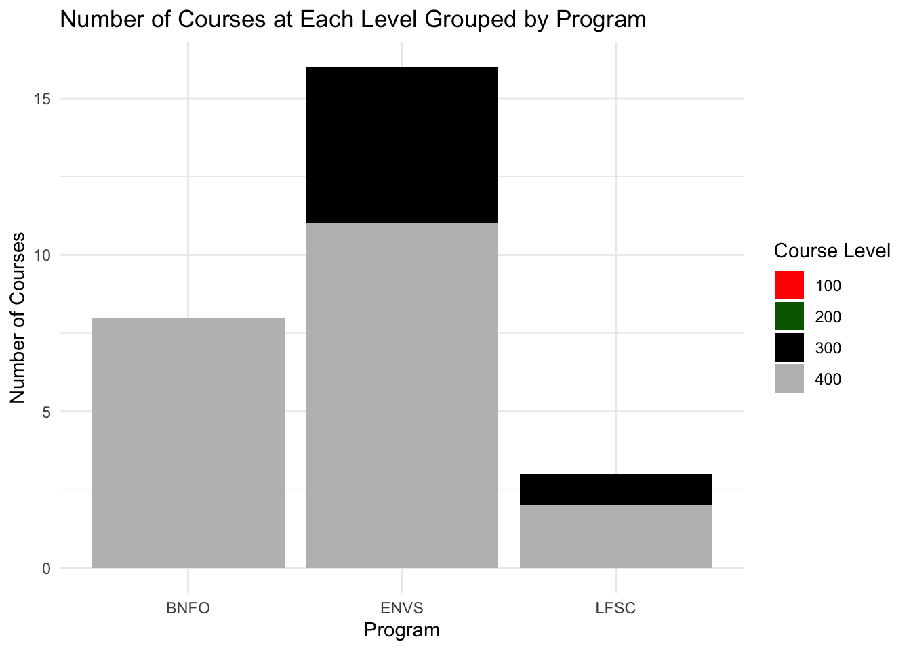
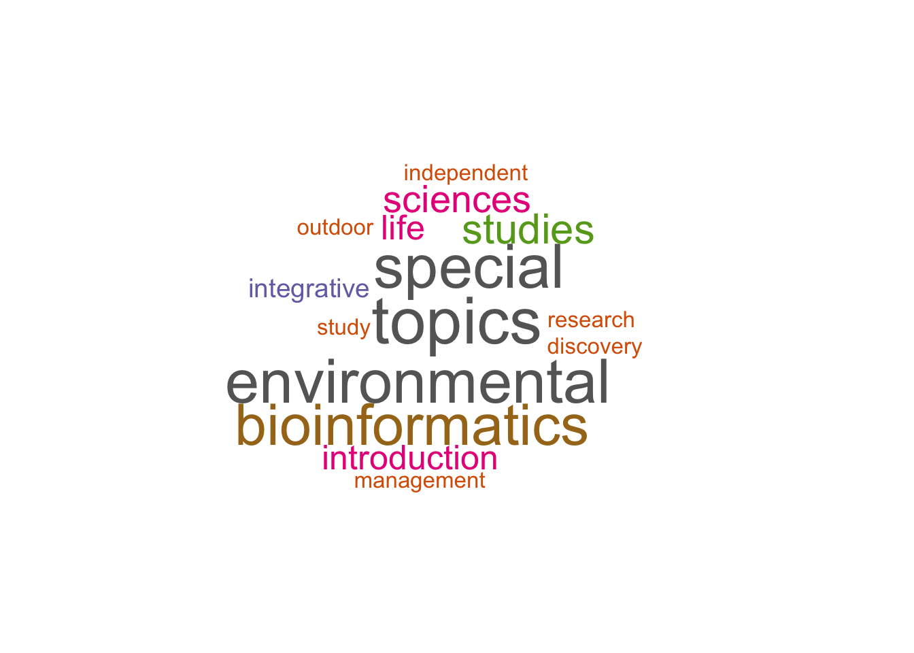

file_path <- "/Users/chrispleasant/Desktop/ENVS543/LifeSciencesCurriculum.txt"
# Load libraries
library(ggplot2)
library(dplyr)
Attaching package: 'dplyr'The following objects are masked from 'package:stats':
filter, lagThe following objects are masked from 'package:base':
intersect, setdiff, setequal, unionlibrary(wordcloud)Loading required package: RColorBrewerlibrary(tidyr)
# Read the text data
data <- readLines(file_path)Warning in readLines(file_path): incomplete final line found on
'/Users/chrispleasant/Desktop/ENVS543/LifeSciencesCurriculum.txt'# Extract course information using regex
course_pattern <- "([A-Z]{4}) (\\d{3})\\. (.+?)\\. (\\d+-?\\d* Hours)"
matches <- regmatches(data, gregexpr(course_pattern, data, perl = TRUE))
courses <- unlist(matches)
# Convert extracted data to a data frame
course_data <- data.frame(
Program = sub(course_pattern, "\\1", courses),
Level = sub(course_pattern, "\\2", courses),
Title = sub(course_pattern, "\\3", courses),
Credits = sub(course_pattern, "\\4", courses),
stringsAsFactors = FALSE
)
# Add a new column for course level classification (e.g., 100, 200)
course_data$Course_Level <- paste0(substr(course_data$Level, 1, 1), "00")
# Clean Credits column to numeric
course_data$Credits <- as.numeric(sub(" Hours", "", course_data$Credits))Warning: NAs introduced by coercion# Group data for plotting
course_counts <- course_data %>%
group_by(Program, Course_Level) %>%
summarize(Count = n(), .groups = "drop") %>%
spread(Course_Level, Count, fill = 0)
# Plotting the number of courses grouped by program and level
ggplot(course_counts, aes(x = Program)) +
geom_bar(aes(y = `100`, fill = "100"), stat = "identity", position = "dodge") +
geom_bar(aes(y = `200`, fill = "200"), stat = "identity", position = "dodge") +
geom_bar(aes(y = `300`, fill = "300"), stat = "identity", position = "dodge") +
geom_bar(aes(y = `400`, fill = "400"), stat = "identity", position = "dodge") +
labs(title = "Number of Courses at Each Level Grouped by Program",
x = "Program",
y = "Number of Courses") +
scale_fill_manual(values = c("100" = "red", "200" = "darkgreen", "300" = "black", "400" = "gray"),
name = "Course Level") +
theme_minimal()
# Generate a word cloud for course titles
wordcloud(
words = unlist(strsplit(paste(course_data$Title, collapse = " "), "\\s+")),
scale = c(3, 0.5),
random.order = FALSE,
colors = brewer.pal(8, "Dark2")
)Loading required namespace: tmWarning in tm_map.SimpleCorpus(corpus, tm::removePunctuation): transformation
drops documentsWarning in tm_map.SimpleCorpus(corpus, function(x) tm::removeWords(x,
tm::stopwords())): transformation drops documents